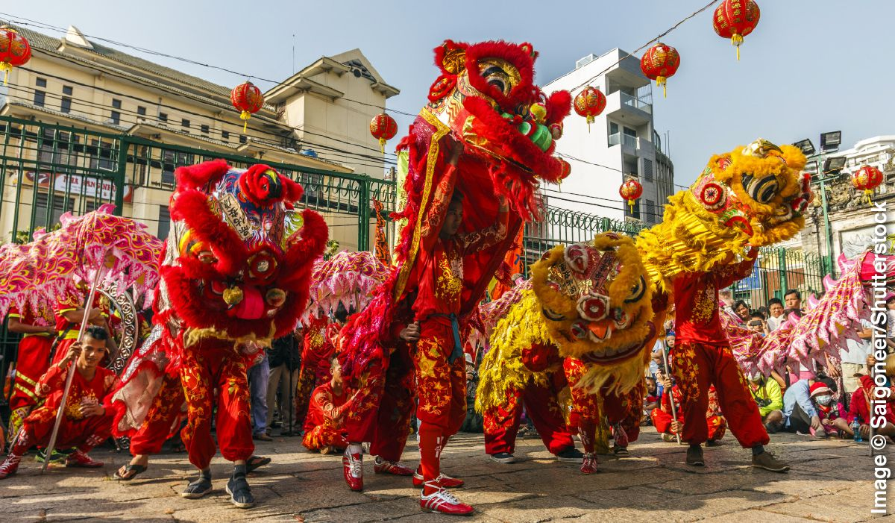
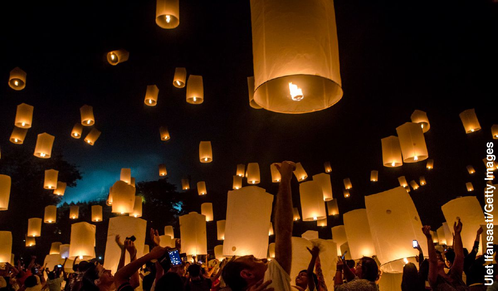
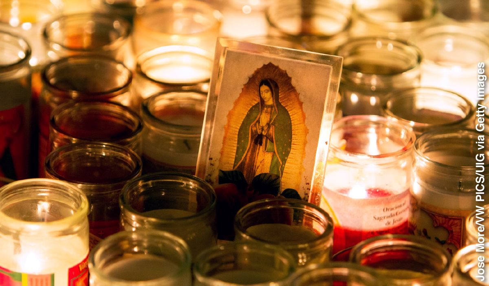

How do Jehovah’s Witnesses determine whether a holiday is acceptable?
Before deciding whether to celebrate a particular holiday, Jehovah’s Witnesses consult the Bible. Some holidays and celebrations clearly violate Bible principles. When that is the case, Jehovah’s Witnesses do not participate. Regarding other holidays, each Witness makes his or her own choice, striving “to maintain a clear conscience before God and men.”—Acts 24:16.
The following are some questions that Jehovah’s Witnesses ask themselves when deciding whether to celebrate a holiday.a
Is the holiday based on an unscriptural teaching?
Bible principle: “‘Get out from among them, and separate yourselves,’ says Jehovah, ‘and quit touching the unclean thing.’”—2 Corinthians 6:15-17.
To separate themselves completely from teachings that are spiritually unclean, that is, contrary to what the Bible states, Jehovah’s Witnesses do not celebrate holidays that include the following characteristics.
Holidays that are rooted in the belief in or worship of other gods. Jesus stated: “It is Jehovah your God you must worship, and it is to him alone you must render sacred service.” (Matthew 4:10) Following that admonition, Jehovah’s Witnesses do not celebrate Christmas, Easter, or May Day, since these holidays are rooted in the worship of gods other than Jehovah. In addition, they do not participate in such holidays as the following.
Kwanzaa. The name Kwanzaa “comes from the Swahili words matunda ya kwanza, which mean ‘first fruits’ and [this] indicates the holiday’s roots in the first harvest celebrations recorded in African history.” (Encyclopedia of Black Studies) Although some view Kwanzaa as a nonreligious celebration, the Encyclopedia of African Religion compares it to an African festival during which the firstfruits “are offered to the divinities and the ancestors as a way of thanking them,” adding: “It is also the same spirit of giving thanks and expressing gratitude for the blessings of life bestowed upon by the ancestors that informs the African American holiday, Kwanzaa.”
Kwanzaa
Mid-Autumn Festival. This is a “festival to honor the moon goddess.” (Holidays, Festivals, and Celebrations of the World Dictionary) It includes a ritual that “involves the women of the house bowing, what in Chinese is a kowtow, before the goddess.”—Religions of the World—A Comprehensive Encyclopedia of Beliefs and Practices.
Nauruz (Nowruz). “Some of the festival’s earliest origins lie in Zoroastrianism, marking one of the holiest days in the ancient Zoroastrian calendar. . . . In particular, the Spirit of Noon, known as [Rapithwin], who was considered to be driven underground by the Spirit of Winter during the cold months, was welcomed back with celebrations at noon on the day of Nowruz according to Zoroastrian tradition.”—United Nations Educational, Scientific and Cultural Organization.
Shab-e Yalda. This celebration of the winter solstice is “definitely connected to the worship of Mithra,” the god of light, according to the book Sufism in the Secret History of Persia. It has also been suggested that the holiday may be related to the worship of the Roman and Greek sun gods.b
Thanksgiving. Like Kwanzaa, this holiday is rooted in ancient harvest celebrations that honored various gods. Over time, “these ancient folk traditions were taken over by the Christian church.”—A Great and Godly Adventure—The Pilgrims and the Myth of the First Thanksgiving.
Holidays that are based on superstition or on the belief in luck. The Bible says that those “setting a table for the god of Good Luck” are “among those forsaking Jehovah.” (Isaiah 65:11) Therefore, Jehovah’s Witnesses do not celebrate the following holidays:
Ivan Kupala. “According to popular belief, during [Ivan Kupala] nature releases its magic forces which can be harnessed by bravery and luck,” says the book The A to Z of Belarus. Originally, the event was a pagan holiday that celebrated the summer solstice. However, notes the Encyclopedia of Contemporary Russian Culture, “it blended with the Church holiday [the “saint’s day” of John the Baptist] after the acceptance of Christianity.”
Lunar New Year (Chinese New Year or Korean New Year). “At this time of year more than any other, the primary concerns of family, friends, and relatives are to ensure good luck, pay respects to the gods and spirits, and wish good fortune for the coming year.” (Mooncakes and Hungry Ghosts—Festivals of China) In the same manner, the Korean New Year “comprises ancestral worship, rituals to dispel evil spirits and ensure good luck for the New Year, and auguries [divinations] to determine what the New Year promises.”—Encyclopedia of New Year’s Holidays Worldwide.

Chinese New Year
Holidays that are based on the idea that the soul is immortal. The Bible clearly states that the soul can die. (Ezekiel 18:4) Therefore, Jehovah’s Witnesses do not celebrate the holidays listed below, which promote belief in the immortality of the soul:
All Souls’ Day (Day of the Dead). This is a day for “commemorating all the faithful departed,” according to the New Catholic Encyclopedia. “Throughout the Middle Ages it was popular belief that the souls in purgatory could appear on this day as will-o’-the-wisps, witches, toads, etc., to persons who had wronged them during their life.”
Qingming Festival (Ch’ing Ming) and Hungry Ghost Festival. These two festivals are held to honor ancestors. During Ch’ing Ming, says the book Celebrating Life Customs Around the World—From Baby Showers to Funerals, “food, drink, and paper money are burned in order to ensure the dead do not go hungry or thirsty and are not lacking money.” The book also states that “during Hungry Ghost Month, most particularly on the night of the full moon, [celebrants believe] there is a greater connection between the dead and the living than on any other night, so it is important to take precautions to placate the dead as well as to honor ancestors.”
Chuseok. This festival, says The Korean Tradition of Religion, Society, and Ethics, includes “offering food and wine to the souls of the dead.” The offerings reflect “a belief in the soul’s continued existence after the body’s death.”
Holidays that are linked to the occult. The Bible states: “Anyone who employs divination, anyone practicing magic, anyone who looks for omens, a sorcerer, anyone binding others with a spell, anyone who consults a spirit medium or a fortune-teller, or anyone who inquires of the dead . . . is detestable to Jehovah.” (Deuteronomy 18:10-12) To stay clear of any occultism—including astrology (a form of divination)—Jehovah’s Witnesses do not celebrate Halloween or the following holidays:
Sinhala and Tamil New Year. “The traditional rituals associated with this event . . . include carrying out certain activities at astrologically determined auspicious times.”—Encyclopedia of Sri Lanka.
Songkran. The name of this Asian festival “is derived from the Sanskrit word . . . meaning ‘movement’ or ‘change,’ and [the festival] marks the movement of the sun into the zodiacal constellation of Aries.”—Food, Feasts, and Faith—An Encyclopedia of Food Culture in World Religions.
Observances related to worship under the Mosaic Law, which ended with Jesus’ sacrifice. The Bible states: “Christ is the end of the Law.” (Romans 10:4) Christians still benefit from principles of the Mosaic Law given to ancient Israel. However, they do not celebrate its festivals, especially festivals that point forward to a Messiah who Christians believe has already come. “Those things are a shadow of the things to come,” says the Bible, “but the reality belongs to the Christ.” (Colossians 2:17) In view of the foregoing, and since some festivals have incorporated unscriptural customs, the festivals listed below are among those that Jehovah’s Witnesses do not celebrate:
Hanukkah. This festival commemorates the rededication of the Jewish temple in Jerusalem. Yet, the Bible says that Jesus became High Priest of a “greater and more perfect tent [or, temple] not made with hands, that is, not of this creation.” (Hebrews 9:11) For Christians, that spiritual temple replaced the physical temple in Jerusalem.
Rosh Hashanah. This is the first day of the Jewish year. In ancient times, this festival featured special sacrifices offered to God. (Numbers 29:1-6) However, Jesus Christ, as the Messiah, caused “sacrifice and gift offering to cease,” making them invalid in God’s eyes.—Daniel 9:26, 27.
Does the holiday promote interfaith?
Bible principle: “What does a believer share in common with an unbeliever? And what agreement does God’s temple have with idols?”—2 Corinthians 6:15-17.
While Jehovah’s Witnesses endeavor to live peaceably with their neighbors and respect the right of each person to choose what to believe, they avoid celebrations that promote interfaith in the following ways.
Celebrations of a religious figure or events that encourage united worship among people with different religious beliefs. When God led his ancient people to a new land where the inhabitants practiced other religions, he told them: “You must not make a covenant with them or their gods. . . . If you should serve their gods, it would surely become a snare to you.” (Exodus 23:32, 33) Therefore, Jehovah’s Witnesses do not share in such holidays as the following.
Loy Krathong. During this Thai festival, “people make bowls of leaves, add candles or incense sticks, and release the bowls onto the water. The boats are said to carry bad luck away. The festival in fact commemorates a holy footprint left by the Buddha.”—Encyclopedia of Buddhism.
National Repentance Day. Those who participate in this event “agree [to] the fundamentals of Christian faith,” according to a government official quoted in The National, a Papua New Guinean newspaper. He says that the day is a “source of the country’s Christian principles.”
Vesak. “This is the holiest of Buddhist holy days, celebrating the Buddha’s birth, enlightenment, and death, or attaining of Nirvana.”—Holidays, Festivals, and Celebrations of the World Dictionary.

Vesak
Observances that are based on religious traditions not endorsed by the Bible. Jesus told religious leaders: “You have made the word of God invalid because of your tradition.” He also stated about them that their worship was in vain because they taught “commands of men as doctrines.” (Matthew 15:6, 9) Because they take this warning to heart, there are many religious events that Jehovah’s Witnesses do not celebrate.
Epiphany (Three Kings’ Day, Timkat, or Los Reyes Magos). Celebrants commemorate either the astrologers’ visit to Jesus or the baptism of Jesus. The festival “Christianized certain pagan spring festivals, which honored the gods of running water, rivers, and streams.” (The Christmas Encyclopedia) Timkat, a related festival, “has deep roots in tradition.”—Encyclopedia of Society and Culture in the Ancient World.
Feast of the Assumption of the Virgin Mary. This feast celebrates the belief that Jesus’ mother ascended to heaven with her physical body. “This belief,” says Religion and Society—Encyclopedia of Fundamentalism, “was unknown in the early church and there is no reference to it in Scripture.”
Feast of the Immaculate Conception. “The Immaculate Conception [of Mary] is not taught explicitly in Scripture . . . [It] is a judgment that the Church has made.”—New Catholic Encyclopedia.
Lent. This period of penitence and fasting, according to the New Catholic Encyclopedia, was established “in the fourth century,” over 200 years after the Bible was completed. Regarding the first day of Lent, the encyclopedia states: “The practice of the faithful receiving ashes on Ash Wednesday has been universal since the Synod of Benevento in 1091.”
Meskel (or, Maskal). This Ethiopian festival marks “the finding of the True Cross (the cross upon which Christ was crucified), by lighting bonfires and dancing around them,” says the Encyclopedia of Society and Culture in the Medieval World; parentheses theirs. However, Jehovah’s Witnesses do not use the cross in their worship.
Does the holiday exalt a human, an organization, or a national symbol?
Bible principle: “This is what Jehovah says: ‘Cursed is the man who puts his trust in mere humans, who relies on human power, and whose heart turns away from Jehovah.’”—Jeremiah 17:5.
Although they express appreciation for fellow humans and even pray for them, Jehovah’s Witnesses do not participate in the kinds of events or celebrations that follow:
Holidays that honor a ruler or other notable figure. “For your own sakes,” the Bible states, “quit trusting in mere man, who is only the breath in his nostrils. Why should he be taken into account?” (Isaiah 2:22) Thus, Jehovah’s Witnesses do not, for example, celebrate a sovereign’s birthday.
Celebrations of a nation’s flag. Jehovah’s Witnesses do not celebrate Flag Day. Why not? Because the Bible says: “Guard yourselves from idols.” (1 John 5:21) Some people today do not consider a flag to be an idol—an object of worship—but historian Carlton J. H. Hayes wrote: “Nationalism’s chief symbol of faith and central object of worship is the flag.”
Holidays or celebrations that exalt a saint. What happened when a God-fearing man bowed to the apostle Peter? The Bible states: “Peter lifted him up, saying: ‘Rise; I too am just a man.’” (Acts 10:25, 26) Since neither Peter nor any of the other apostles accepted special honor or veneration, Jehovah’s Witnesses do not participate in events to honor those considered to be saints, such as the celebrations that follow:
All Saints’ Day. “A feast in honor of all the saints . . . The origins of this feast are uncertain.”—New Catholic Encyclopedia.
Fiesta of Our Lady of Guadalupe. This festival honors “the patron saint of Mexico,” believed by some to be Mary, the mother of Jesus. She is said to have miraculously appeared to a peasant in 1531.—The Greenwood Encyclopedia of Latino Literature.

Fiesta of Our Lady of Guadalupe
Name Day. “A name day is the feast day of the saint after whom a child is named either during baptism or at confirmation,” says the book Celebrating Life Customs Around the World—From Baby Showers to Funerals. It adds that there is “a strong religious element to the day.”
Celebrations of political or social movements. “It is better to take refuge in Jehovah,” the Bible states, “than to trust in humans.” (Psalm 118:8, 9) To avoid implying that they trust humans rather than God to solve the world’s problems, Jehovah’s Witnesses do not join in Youth Day or Women’s Day celebrations that support political or social campaigns. For the same reason, they do not join in Emancipation Day or similar celebrations. Instead, they look to God’s Kingdom to solve the problems of racism and inequality.—Romans 2:11; 8:21.
Does the holiday elevate one nation or ethnic group above others?
Bible principle: “God is not partial, but in every nation the man who fears him and does what is right is acceptable to him.”—Acts 10:34, 35.
Although many of Jehovah’s Witnesses are fond of their homeland, they avoid celebrations that elevate nations or ethnic groups in the ways described in the following list.
Events that honor the armed forces. Rather than advocating war, Jesus told his followers: “Continue to love your enemies and to pray for those who persecute you.” (Matthew 5:44) Therefore, Jehovah’s Witnesses do not observe celebrations that honor soldiers, including the holidays that follow:
Anzac Day. “Anzac stands for Australian and New Zealand Army Corps,” and “Anzac Day has gradually evolved into a day of remembrance for those killed in war.”—Historical Dictionary of Australia.
Veterans Day (Remembrance Day, Remembrance Sunday, or Memorial Day). These holidays honor “veterans of the armed forces and those killed in the country’s wars.”—Encyclopædia Britannica.
Celebrations of a nation’s history or independence. Regarding his followers, Jesus said: “They are no part of the world, just as I am no part of the world.” (John 17:16) Although they are pleased to learn about a nation’s history, Jehovah’s Witnesses remain separate from such events as the following:
Australia Day. According to the Worldmark Encyclopedia of Cultures and Daily Life, this holiday commemorates “the day in 1788 when the English soldiers raised their flag and declared Australia a new colony.”
Guy Fawkes Day. This is “a day of national celebration and commemoration [of] the failed attempt by Guy Fawkes and other Catholic sympathizers to blow up both King James I and [England’s] Parliament in 1605.”—A Dictionary of English Folklore.
Independence Day. In several lands, this is “a day set aside for public celebration of an anniversary connected with the beginnings of national independence.”—Merriam-Webster’s Unabridged Dictionary.
Is the holiday characterized by unrestrained or lewd behavior?
Bible principle: “The time that has passed by is sufficient for you to have done the will of the nations when you carried on in acts of brazen conduct, unbridled passions, overdrinking, wild parties, drinking bouts, and lawless idolatries.”—1 Peter 4:3.
In harmony with that principle, Jehovah’s Witnesses avoid celebrations that feature overdrinking and wild partying. Jehovah’s Witnesses enjoy getting together with their friends, and they might choose to drink alcoholic beverages moderately, if at all. They do their best to follow the Bible’s counsel: “Whether you are eating or drinking or doing anything else, do all things for God’s glory.”—1 Corinthians 10:31.
Therefore, Jehovah’s Witnesses do not participate in carnivals or similar festivals that promote indecent conduct condemned in the Bible. This includes the Jewish festival of Purim. Although Purim has long commemorated the deliverance of the Jews in the fifth century B.C.E., it might now “be loosely but fairly described as the Jewish answer to Mardi Gras or Carnival,” says the book Essential Judaism. For many revelers, “it involves dressing in costume (often in drag), riotous behavior, excessive drinking, and making lots of noise.”
Do Jehovah’s Witnesses, who do not celebrate certain holidays, still love their families?
Yes. The Bible teaches people to love and respect all family members, regardless of their faith. (1 Peter 3:1, 2, 7) Of course, when one of Jehovah’s Witnesses stops sharing in certain celebrations, some of his or her relatives may feel upset, hurt, or even betrayed. Therefore, many of Jehovah’s Witnesses take the initiative to reassure their relatives of their love, to explain tactfully the reasons for their decisions, and to visit their relatives on other occasions.
Do Jehovah’s Witnesses tell others not to celebrate certain holidays?